Sequential Monte Carlo and particle filters
We know how to get a posterior when the model is deterministic:
One gives one trajectory, so the likelihood is one calculation.
Stochastic models break this.
The model has a latent state , the trajectory it actually took, which we do not observe.
Getting the likelihood of means averaging over every trajectory the model could have taken.
determines the trajectory exactly:
The integral collapses to a single point. That is why everything has worked so far.
The integral runs over every sequence of events the model could produce, and the times at which they happen.
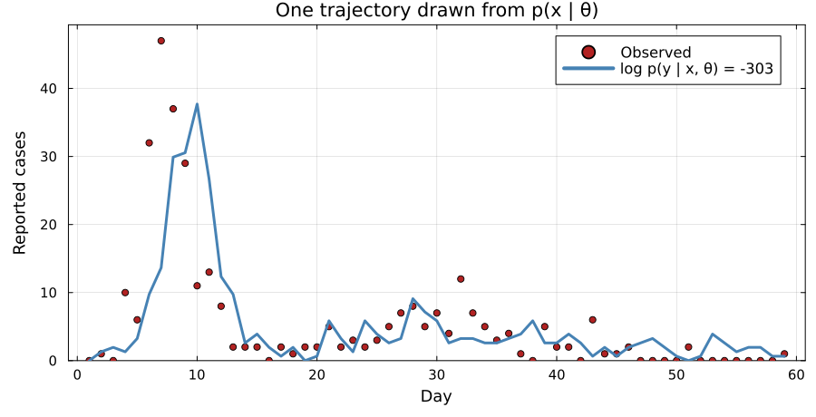
Simulating the model draws . Scoring it against the data gives , an unbiased but very noisy estimate of the likelihood.
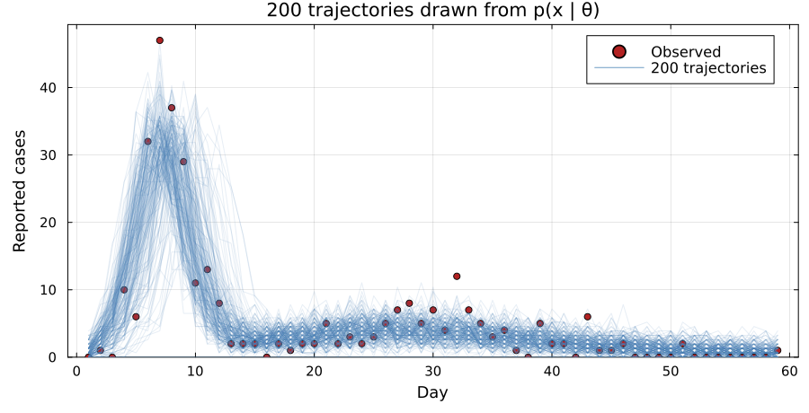
Each trajectory is one way the epidemic could have gone. Its weight is the probability of the data if it had gone that way. A trajectory with a higher weight counts for more in the average.
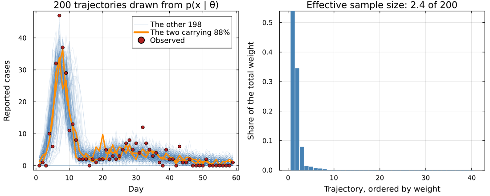
One weight has to cover all 59 observations. Two of the 200 hold 88% of the total.
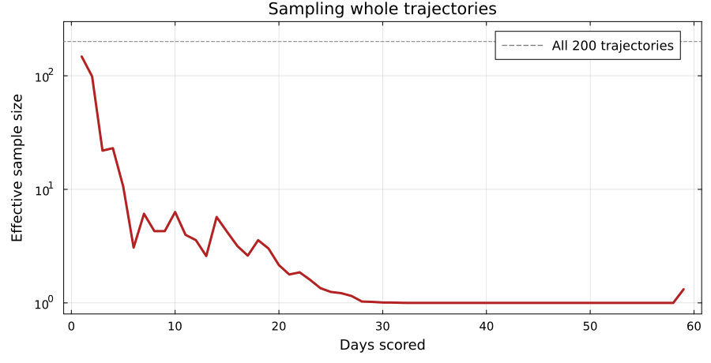
Scored on day 1 alone, the effective sample size is close to all 200. By day 10 it is 6, and by day 30 about 1.
The estimate then rests on one or two draws, so it changes wildly from run to run.
The fall is close to a straight line on a log scale, so a bigger cannot keep up.
Each factor asks how well the model predicted one day, given everything before it.
We track the possible trajectories with a set of particles.
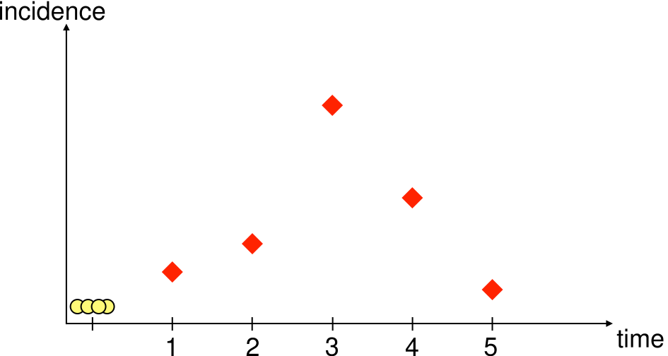
particles start from the same state, each with weight .
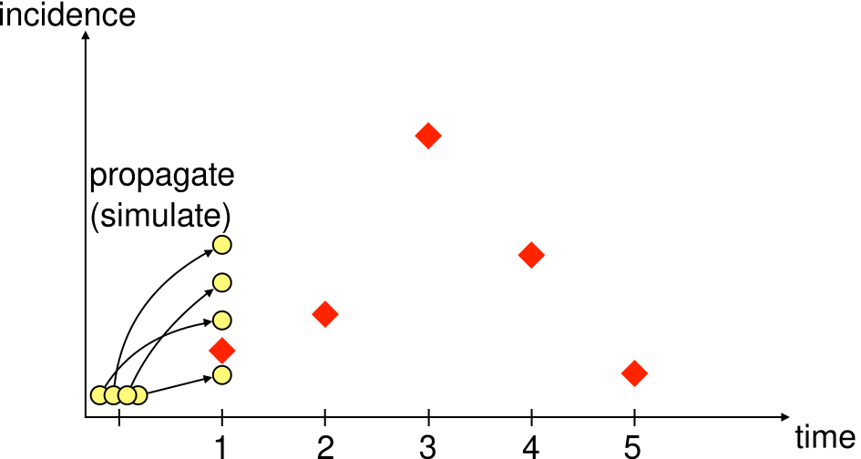
Every particle takes one step of the model.
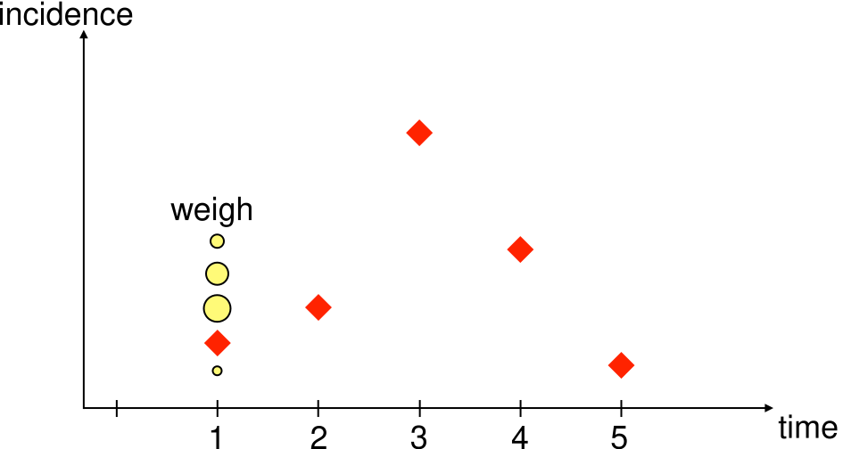
The weight is the probability of today’s count under that particle, .
Let the weights accumulate across days, so each particle carries the product of its own weights:
That is the estimator we started with. The factorisation gives us a point between days at which to discard particles.
Otherwise all 200 are simulated to day 59, including the 198 that contribute almost nothing.
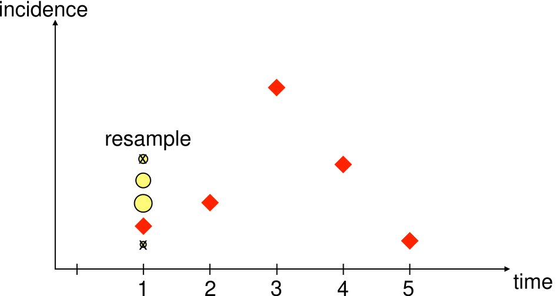
Draw particles from the current ones in proportion to their weights. Every weight resets to .
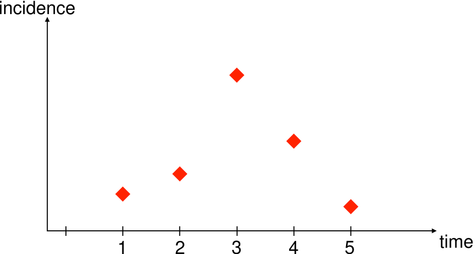
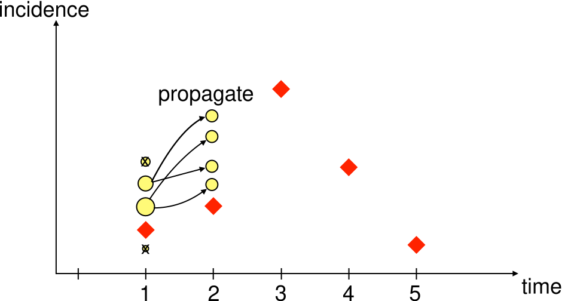
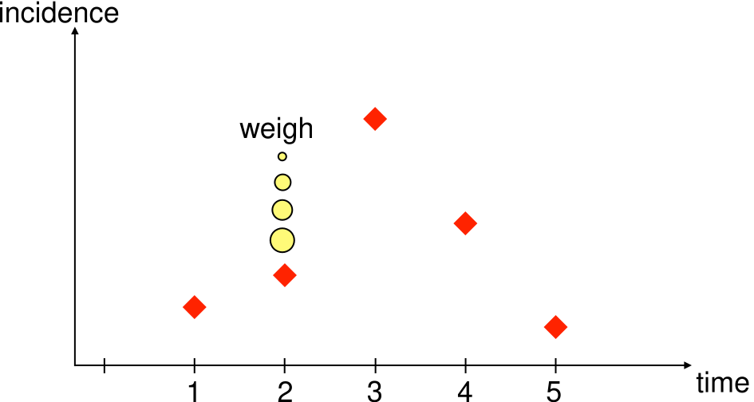
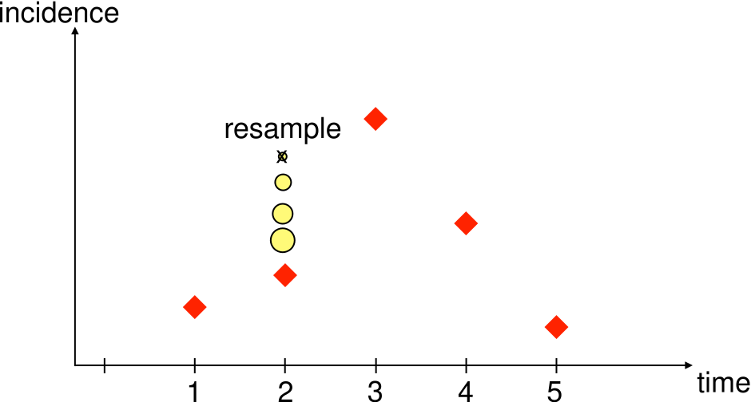
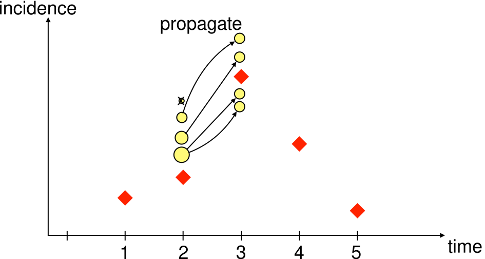
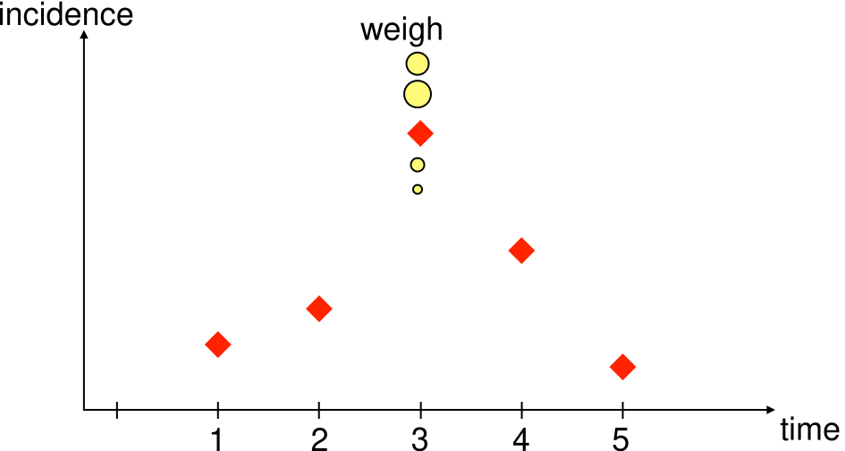
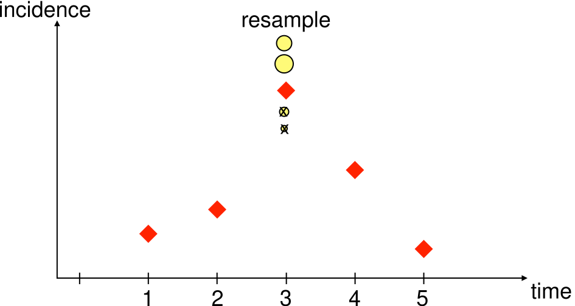
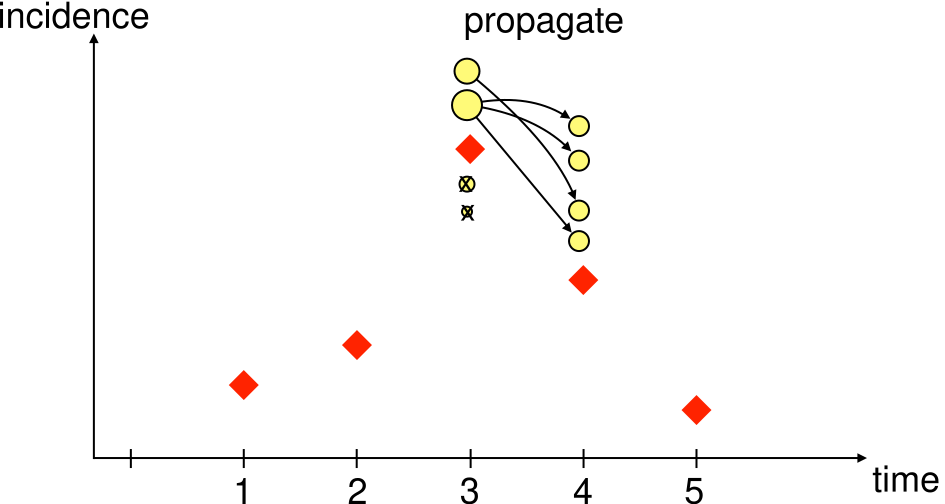
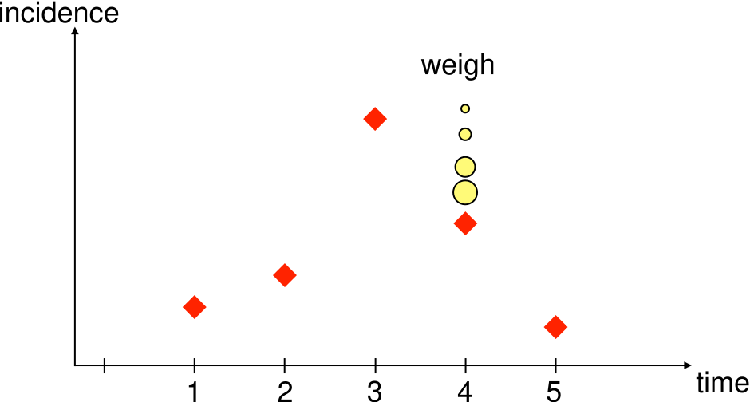
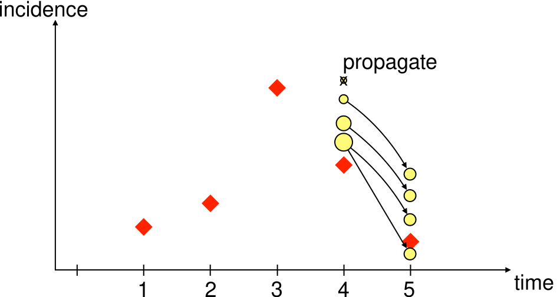
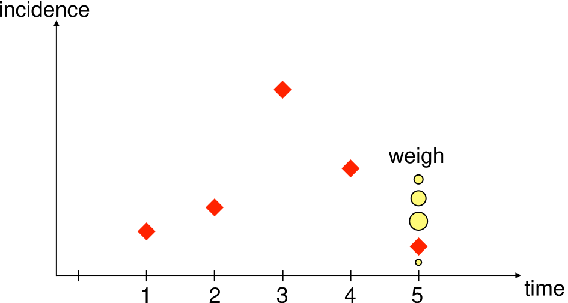
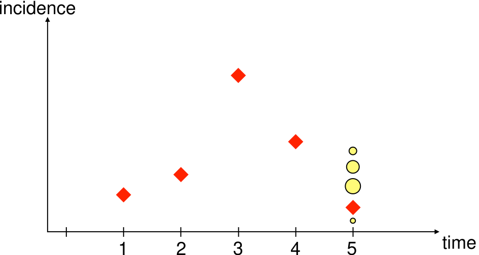
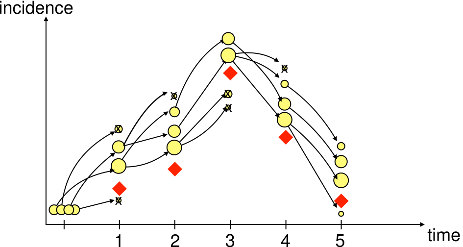
Initialise Propagate Weight Resample in proportion to Propagate Weight Resample in proportion to Propagate Weight Resample in proportion to Propagate Weight Resample in proportion to Propagate Weight Resample in proportion to
Four particles here. Red diamonds are the data, yellow circles the particles, sized by weight, struck through when nobody resampled them.
Average the weights each day, before resampling:
The average runs over all particles, including the ones resampling is about to discard. That is why resampling cannot inflate the estimate.
This is sequential Monte Carlo.
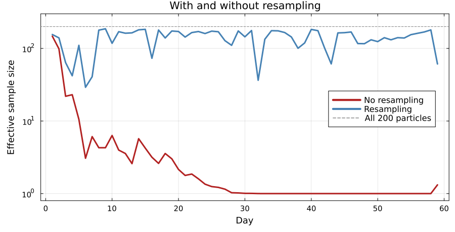
Without resampling the effective sample size is 6 by day 10, and about 1 from day 30 on.
Follow the arrows back from day 5. The survivors all descend from a few of the day 1 particles.
Early states end up represented by fewer and fewer distinct particles, which limits what the filter can say about the start of the epidemic.
The estimate is unbiased but stochastic. Run it twice at the same and you get two different numbers.
Measure the spread of at one and pick from that. You do this in the practical.
function bootstrap_filter(rng, θ, obs, n_particles; init_state)
particles = [copy(init_state) for _ in 1:n_particles]
loglik = 0.0
for y in obs
## propagate: run every particle forward one day
incidence = map(1:n_particles) do i
particles[i], daily = gillespie_step(rng, particles[i], θ)
daily
end
## weight: how plausible is today's observation under each particle?
log_w = logpdf.(Poisson.(θ[:ρ] .* incidence), y)
## accumulate: the mean weight estimates today's likelihood
loglik += logsumexp(log_w) - log(n_particles)
## resample: keep the particles that explained the data
w = exp.(log_w .- maximum(log_w))
particles = particles[rand(rng, Categorical(w ./ sum(w)), n_particles)]
end
return loglik
endIn the practical you read this one line by line, then swap it for the bootstrap filter in GeneralisedFilters.jl behind the same interface.
In the practical you will
Estimating the likelihood